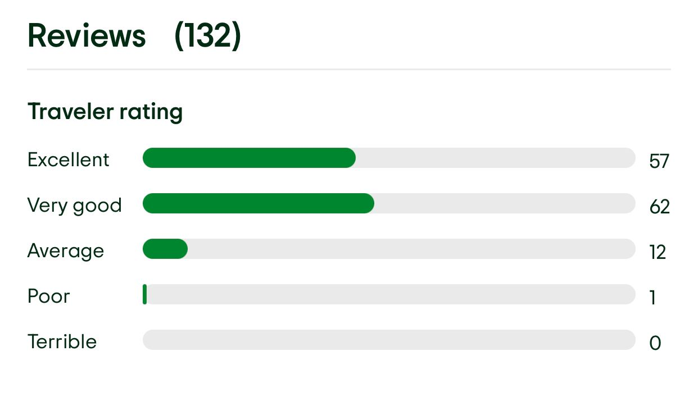
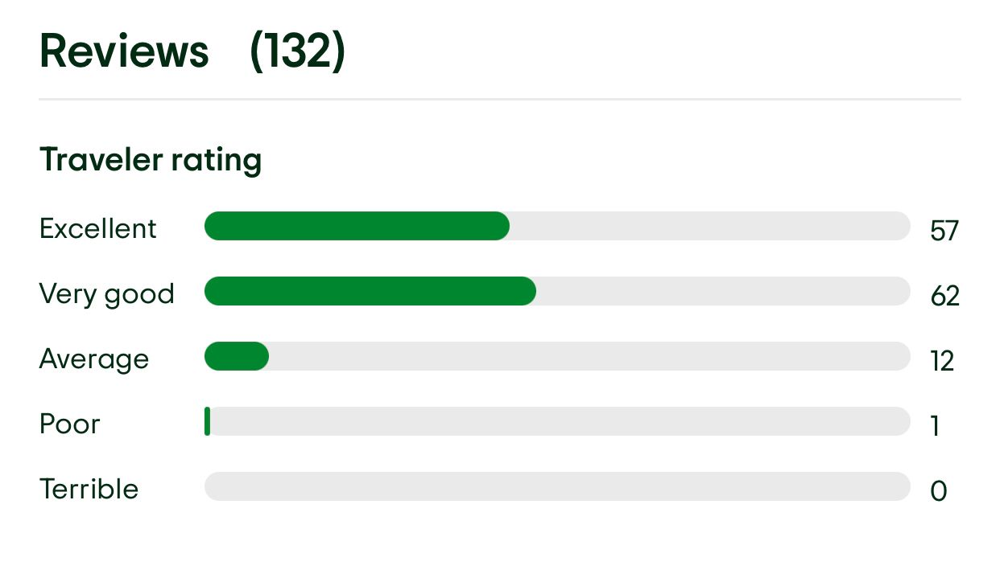
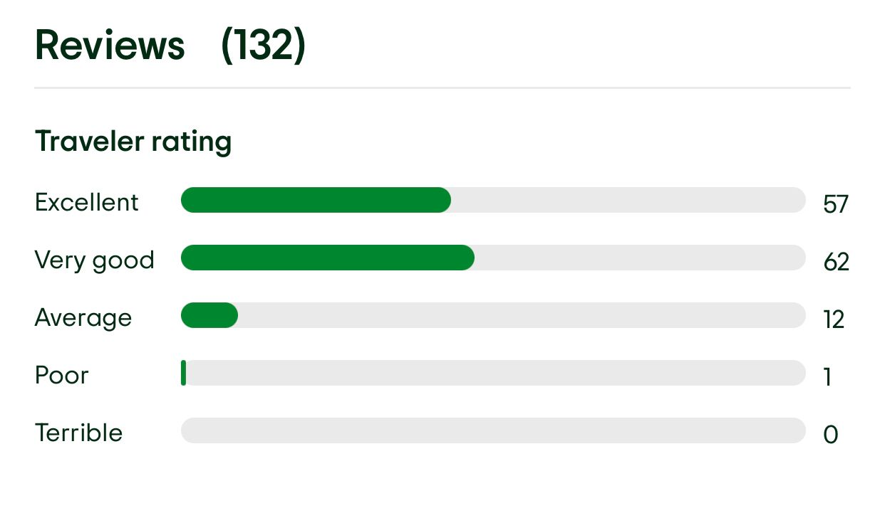
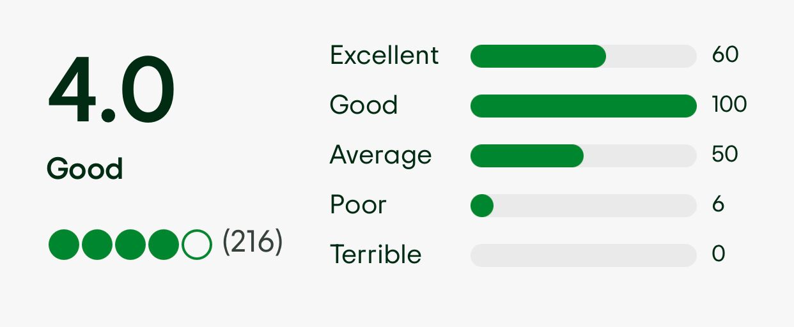
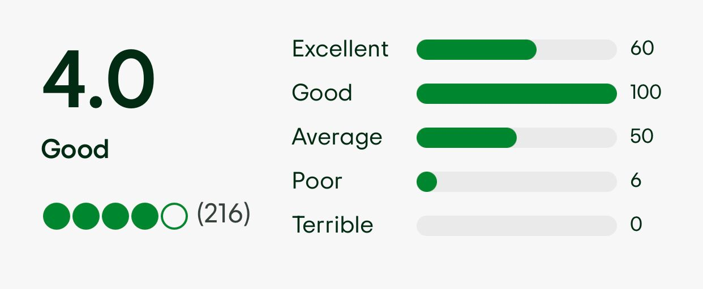

COBAN RONDO
 

Air yang berasal dari mata air Cemoro di kaki Gunung Kawi ini jatuh deras ke kolam alami di bawahnya, menciptakan kabut air yang menyegarkan dan suasana yang damai.

Air yang berasal dari mata air Cemoro di kaki Gunung Kawi ini jatuh deras ke kolam alami di bawahnya, menciptakan kabut air yang menyegarkan dan suasana yang damai.
 

Dari ketinggian, pengunjung dapat menikmati panorama indah Kota Batu dan sekitarnya. Langit biru, perbukitan hijau, dan pemandangan spektakuler lainnya dapat dinikmati dari spot ini.


Air laut memiliki 3 warna yakni biru, hijau, dan kuning. Perpaduan warna ini muncul karena kedalaman berbeda serta banyaknya alga di dasar pantai.